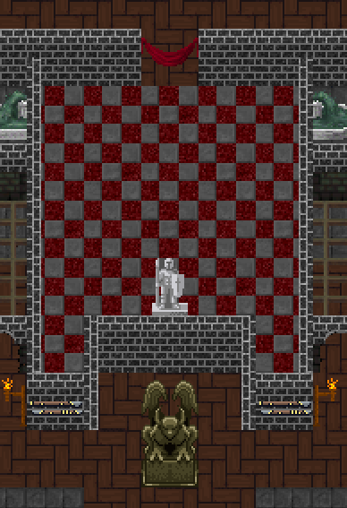
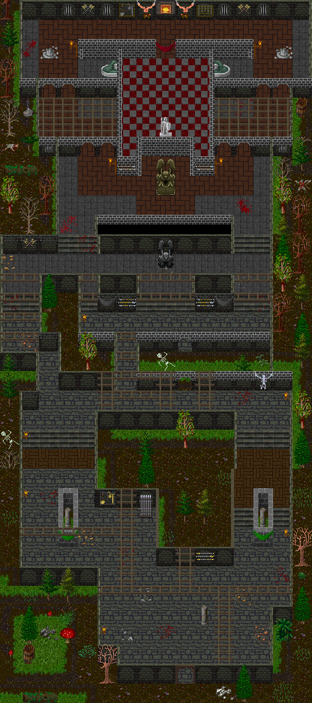
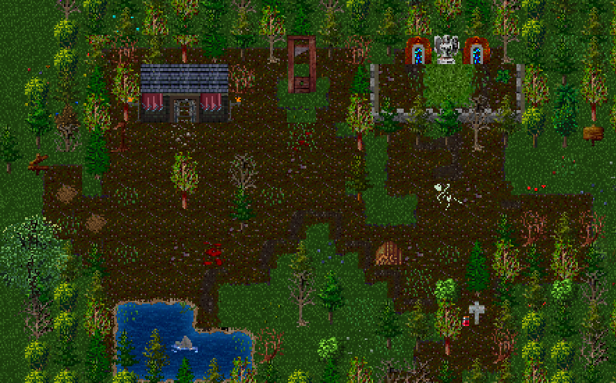

Overview
Guild Forts are overworld PvP events where guilds compete to capture and control a central fort.
Once captured, the fort will passively generate Guild Experience over time.
A guild holding the fort for a full 24 hours can generate up to approximately:

Guild Fort Capture Point
How It Works
The objective is to take control of the fort’s central capture point and maintain control for as long as possible.
The capture point has a maximum of 50,000 HP.
To capture the fort:
- Enemy guilds must reduce the capture point to 0 HP
- Once destroyed, the new guild begins restoring the capture point HP in their favour
- The goal is to reach 50,000 HP and defend it
The longer your guild holds the fort at full control, the more passive Guild Experience is generated.
Map & Entry Points
The Guild Fort can be accessed from two overworld locations:
- Dragonia Valley Entrance
- Neverealm Forest Entrance
The fort consists of:
- An Entrance Map outside the fort
- Multiple interior maps where players fight and contest control

Full Guild Fort Layout

Full Guild Fort Outside Layout
Death & Respawn Mechanics
Guild Forts are a "Drops" enabled area.
Upon death, players will lose:
- A random currency note value OR
- A random item from their inventory
After death, players are teleported to a safe respawn area where:
- You cannot deal damage
- You cannot receive damage
From here, you can choose between two portals:
- Re-enter the fort at a random spawn location
- Return to your bed (safe map)
Tips
Holding the fort long-term is more valuable than constant fighting — defense is key.
Coordinate with your guild to defend choke points and entrances.
Attack strategically — wait until enemy control is weakened before pushing.
Use the respawn system wisely to quickly return to the fight.
Only bring items you're willing to risk due to drop mechanics.